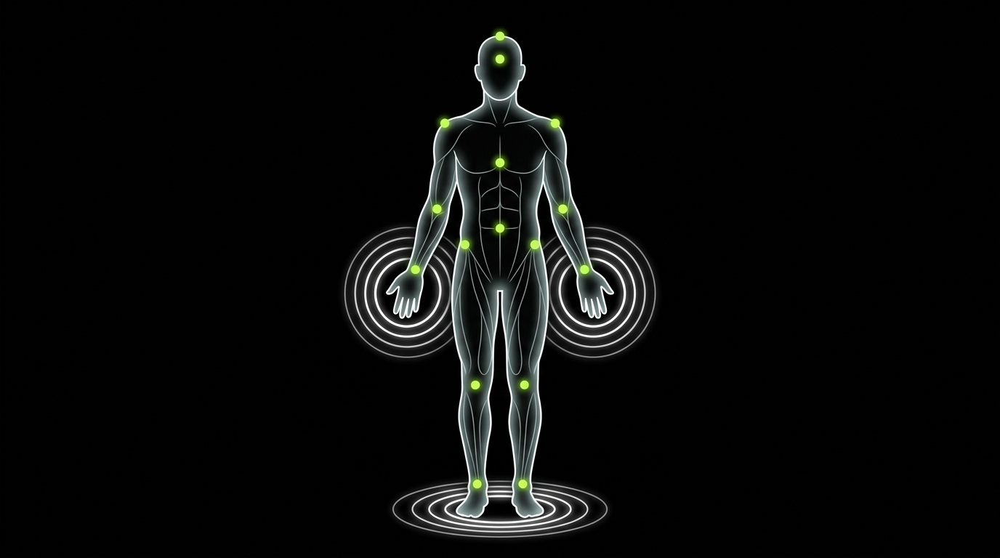

We Do Not Practice Medicine. We Practice Health.
Ancient Points. Measurable Frequency. One Coherent System.
Marma therapy maps 107 vital junctions in the body where tissue, nerve, and life force converge — points where skilled intervention produces systemic change. We pair precise marma point stimulation with calibrated tuning fork frequencies to address the nervous system, musculoskeletal tension, and physiological stress at their source.

What Is Marma Therapy?
The word marma comes from the Sanskrit root mri, meaning death or injury — and from the phrase marayate iti marmani, which translates roughly as "that which causes serious harm when struck." This naming is not incidental. Marma points were first catalogued not as sites of healing, but as sites of danger. Knowing where the body is most vulnerable is the same knowledge that allows a skilled practitioner to direct support precisely where it is most needed.
The classical description of marma points appears in the Sushruta Samhita, a comprehensive Ayurvedic surgical compendium composed between approximately 1000 and 600 BCE. Sushruta identified 107 marma points distributed across the body and defined each as a confluence of five tissue types: mamsa (muscle), sira (blood vessels), snayu (ligaments and tendons), asthi (bone), and sandhi (joints). His commentator Dalhana wrote that "the part of the body which on injury leads to death is called Marma." Sushruta understood these junctions as seats of prana — the animating life force — and organized them by location: 44 in the limbs, 26 in the trunk, and 37 in the head and neck. Knowledge of the 107 marmas was considered essential to surgical safety, comprising half the science of surgery itself.
In therapeutic application, marma points function as access nodes to the body's regulatory channels — the nadis — through which prana, or vital energy, circulates. Each point corresponds to a specific vayu, a dosha, a dhatu, and a srota. When prana flows freely through these junctions, the system maintains coordinated function. When points become congested — through injury, chronic stress, emotional holding, or structural misuse — regional and systemic dysfunction follows. Marma therapy intervenes at these junctions through targeted pressure, movement, or vibration to restore flow and communicate corrective information throughout the body. Within Odin Lab's framework, session design is informed by health intake findings rather than a generic protocol.
The Five Marma Body Zones
Each zone maps specific marma points to physiological functions and therapeutic targets. Treatment is sequenced by zone based on your intake findings.
- Central nervous system regulation
- Cerebrovascular circulation
- Autonomic tone via cranial nerves
- Sensory processing
- Tension headaches & migraines
- Insomnia & circadian disruption
- Anxiety & cognitive fatigue
- Dizziness & neurological stress
- Cardiac rhythm & autonomic HRV
- Pulmonary function
- Vyana vayu — circulation
- Ojas — constitutional resilience
- Grief, anxiety & constriction
- Chronic respiratory tension
- Blood pressure dysregulation
- Post-stress cardiovascular recovery
- Root of all body channels (srotas)
- Enteric nervous system function
- Bowel motility & digestion
- Gut–brain hormonal axis
- IBS, bloating & irregularity
- Stress-driven GI dysfunction
- Pelvic floor tension
- Metabolic sluggishness
- Peripheral nerve conduction
- Lymphatic drainage
- Shoulder girdle & brachial plexus
- Vascular & tendinous tissue
- Repetitive strain & carpal tunnel
- Shoulder restriction
- Upper body lymphatic congestion
- Cold extremities & poor circulation
- Vata grounding & nervous system
- Lower extremity circulation
- Hip girdle & femoral nerve
- Structural load-bearing
- Insomnia & nervous dysregulation
- Chronic lower limb fatigue
- Knee pain & joint inflammation
- Anxiety & restlessness
The Science of Therapeutic Frequency
Tuning forks produce a pure, sustained tone at a fixed frequency — a property that makes them both precise diagnostic instruments in conventional medicine and increasingly studied tools in therapeutic vibration work. When a tuning fork is struck and brought into contact with the body, or held near it, it transmits mechanical vibration at its calibrated frequency. The principle underlying therapeutic application is sympathetic resonance: when an oscillating object at a particular frequency encounters a structure with a similar natural frequency, that structure begins to vibrate in response. Biological tissues — including bone, fascia, fluid, and nervous tissue — each carry characteristic vibrational properties, and calibrated mechanical input may influence their state and function.
The 128 Hz frequency is established in conventional clinical medicine as a diagnostic standard. Physicians apply 128 Hz tuning forks to bony prominences to assess vibration sense and peripheral nerve function, and to the skull and teeth in hearing tests. In therapeutic contexts, 128 Hz is associated with stimulation of nitric oxide release — a signaling molecule that relaxes smooth muscle in blood vessels, improves local circulation, and reduces pain sensitivity — and with direct mechanical stimulation of mechanoreceptors that modulate nociceptive signaling via the gate control mechanism. Higher frequencies in therapeutic practice include 432 Hz, used for nervous system downregulation and support of alpha and theta brainwave states, and 528 Hz, a frequency studied in the context of stress biomarker reduction and cellular stress responses.
Research on vibroacoustic therapy — the structured application of low-frequency sound vibration to the body — provides the most rigorous scientific framework for understanding therapeutic vibration. A 2024 study published in MDPI Sensors (Fooks et al.) found increased parasympathetic nervous system activity across all participants, alongside increased relaxation markers and reduced cortisol-pattern arousal on EEG. A scoping review in BMC Complementary Medicine and Therapies (Kantor et al., 2022) analyzing 20 studies noted that 40 Hz stimulation consistently produced clinically meaningful reductions in pain scores. The vagus nerve — the primary conduit of the parasympathetic nervous system — is a key mechanism through which therapeutic vibration produces systemic effects, with sustained low-frequency vibration producing measurable increases in heart rate variability.
The clinical standard for vibration sense testing in conventional medicine. In therapeutic application, 128 Hz stimulates mechanoreceptors to modulate pain signaling and is associated with nitric oxide release — relaxing vasculature and improving local circulation at the treatment site.
The frequency most consistently used in peer-reviewed vibroacoustic therapy studies, producing clinically meaningful pain score reductions and parasympathetic activation across populations with chronic pain, fibromyalgia, and stress-related conditions in sessions of 20–45 minutes.
In a clinical study of women with fibromyalgia receiving low-frequency vibroacoustic therapy, 74% of participants reduced pain medication use following the study period, with large improvements also documented in sleep quality and functional capacity.
Why Marma + Tuning Forks Together
Marma therapy identifies the precise anatomical junctions where nerve, vessel, and tissue converge — points where mechanical input produces the greatest downstream effect on the body's regulatory systems. Tuning forks deliver that input in its most specific form: calibrated frequency applied directly to those sites, where it can propagate through local tissue and fluid to reach the nerve structures the point maps to. The two modalities are not additive — they are complementary in mechanism. Where marma provides the map, tuning forks provide the signal. Where marma stimulation initiates a shift in local prana flow and vascular response, the sustained vibration of the fork extends that shift through resonance into deeper tissue layers — bone, fascia, and the autonomic nerve plexuses that marma theory identifies as the functional heart of each point. Together, the combination produces a precision nervous system intervention that neither approach achieves alone.
What Marma + Tuning Fork Therapy Addresses
Each of the following areas represents a documented mechanism of action, not a generic wellness claim. Session design targets the specific pathways relevant to your intake.
Stimulation of marma points along the neck, chest, and abdomen directly engages the vagus nerve and the parasympathetic pathways that govern the body's capacity to recover from stress. Calibrated tuning fork frequencies applied at these sites extend the mechanical signal into deep tissue, measurably increasing heart rate variability — the physiological signature of parasympathetic dominance. For individuals who have spent extended periods in sympathetic overdrive, this represents a meaningful reset of the body's baseline threat response.
Prolonged stress produces structural changes in the autonomic nervous system — a chronically elevated baseline, blunted HRV, and suppressed recovery capacity. Marma therapy combined with low-frequency vibroacoustic stimulation directly addresses this by creating the mechanical and neurological conditions for parasympathetic activation. Clinical research documents reductions in perceived stress, cortisol-pattern arousal, and subjective tension following single sessions of 20–30 minutes.
Marma points at joint confluences — wrist, knee, shoulder, hip — map precisely to sites of neurovascular concentration where mechanical intervention can modulate pain signaling through the gate control mechanism. The 128 Hz frequency, in particular, activates mechanoreceptors that compete with nociceptive signals in the spinal cord, reducing pain intensity at the site and through referred pathways. This approach does not mask pain; it addresses the nervous system context in which pain is amplified.
Sleep disruption is frequently a downstream effect of autonomic dysregulation — a nervous system that cannot adequately downshift at the end of the day. Stimulation of grounding marma points such as Talhridaya (sole of the foot) combined with lower-frequency tuning fork application supports the shift into parasympathetic dominance that precedes restorative sleep. Clinical studies on vibroacoustic therapy in fibromyalgia populations documented large improvements in sleep quality alongside pain reduction, with the effect attributed to enhanced parasympathetic tone and reduced nocturnal arousal.
Cognitive fog and reduced mental acuity are often functional — rooted in circulatory insufficiency to the brain, chronic sympathetic activation consuming metabolic resources, or disrupted sleep degrading consolidation and recall. Cranial marma points including Adhipati and Sthapani target cerebrovascular circulation and central nervous system regulation. When combined with 432 Hz frequency work supporting alpha brainwave states, sessions can produce measurable improvements in self-reported focus and reduce the cognitive cost of stress arousal.
The body retains the physiological imprint of unresolved stress and emotional load in tissue tension, autonomic tone, and patterned breathing. Marma therapy — particularly at chest and abdominal points — reaches these held patterns through precise mechanical intervention. Sound vibration at the same points provides an additional sensory channel through which the nervous system registers safety and permission to release. Practitioners consistently report deeper and more lasting emotional release outcomes when sound is integrated with marma point work.
The enteric nervous system — the gut's autonomous nerve network — is directly regulated by vagal tone. Marma points in the abdominal zone, particularly Nabhi (navel), map to the Samana vayu and the root of the srotas governing digestive function. Mechanical and vibrational stimulation of these points supports parasympathetic dominance in the gut, improving motility, secretion, and nutrient assimilation. Stress-driven digestive dysfunction — including bloating, cramping, and irregular bowel function — frequently responds to interventions that address the autonomic root rather than the gastrointestinal symptom alone.
The vascular and lymphatic tissue predominant at sira-type marma points makes these sites particularly relevant for circulation and recovery. Tuning fork stimulation at sites such as Manibandha (wrist) and Lohitaksha (hip/inguinal) supports local blood flow, lymphatic drainage, and the removal of metabolic waste products from tissues recovering from overuse or injury. Nitric oxide release associated with 128 Hz stimulation provides a documented biological mechanism for the observed improvements in peripheral circulation and tissue perfusion.

What Happens in a Session
Every session is built from your health intake, not a generic sequence. Here is what to expect from first contact to post-session integration.
Before any hands-on work, your practitioner conducts a structured health intake covering current symptoms, stress load, sleep quality, digestion, and relevant history. This is not a formality — it directly determines which marma zones receive priority and which frequencies will be used. The session is built from your data, not from a generic sequence.
The practitioner performs a brief physical and energetic assessment, identifying areas of tension, holding, or restricted movement. Tuning forks are used in the biofield — the energy and tissue environment surrounding the body — to detect areas of resonance disruption or congestion before contact work begins. This informs the sequencing and depth of marma point engagement.
The practitioner works systematically through the priority zones, applying precise manual pressure or movement to each marma point and then placing or sounding calibrated tuning forks directly on or adjacent to the site. Frequency selection is matched to tissue type, depth, and therapeutic goal: 128 Hz for musculoskeletal and nerve work, 432 Hz for nervous system regulation, 528 Hz for deeper stress and cellular recovery.
Following active treatment, you remain still for a minimum of 10 minutes while the nervous system integrates the session. This is not optional time — it is when the parasympathetic consolidation that produces lasting effect occurs. Practitioners may apply a final low-frequency tone to support the transition. Post-session guidance covers hydration, movement, and activities to support the integration window in the hours following treatment.
The Science Behind the Protocol
Every element of this protocol is grounded in published clinical and mechanistic research. The following citations represent key findings from the vibroacoustic therapy literature.
A controlled study assessing vibroacoustic sound massage using ECG and EEG biosignals found increased parasympathetic nervous system activity in all participants, alongside EEG-confirmed increases in relaxation and reductions in stress arousal, supporting vibroacoustic therapy as a measurable autonomic intervention.
A scoping review of 20 clinical studies on vibroacoustic therapy for pain management found that 40 Hz stimulation in sessions of 20–45 minutes consistently produced meaningful reductions in pain scores across both acute and chronic pain populations, with no adverse effects reported across studies.
A phase-1 clinical study in women with fibromyalgia found that low-frequency sound stimulation produced large improvements in pain, sleep quality, and functional capacity, with 74% of participants reducing pain medication use and no adverse effects documented throughout the study period.
Precision at the Vital Points
Marma therapy combined with tuning fork frequency work is a 75-minute session built from your health intake. Book a consultation to determine whether this protocol is appropriate for your current presentation.